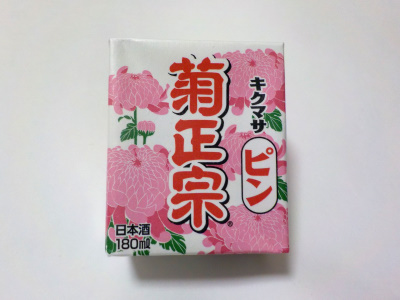

菊政宗のキクマサピン
2022/12/23

今日の夜は寒波で寒いので、何もしないでネット見ながら日本酒を飲むことにしました。
キクマサピンの180mlです。
味がしっかりとありって、キレもいいです。安くて飲みやすくて美味しい日本酒でした。
飲みやすいのでゴクゴク飲みそうになります。一晩でこれ1パックと決めていたので、時間を意識してゆっくりと飲みました。
冬は水分の多いビール系飲料より、アルコール濃度がちょっと高い日本酒のほうが飲みやすいです。
神戸市東灘区御影本町1-7-15
2022/12/23

今日の夜は寒波で寒いので、何もしないでネット見ながら日本酒を飲むことにしました。
キクマサピンの180mlです。
味がしっかりとありって、キレもいいです。安くて飲みやすくて美味しい日本酒でした。
飲みやすいのでゴクゴク飲みそうになります。一晩でこれ1パックと決めていたので、時間を意識してゆっくりと飲みました。
冬は水分の多いビール系飲料より、アルコール濃度がちょっと高い日本酒のほうが飲みやすいです。